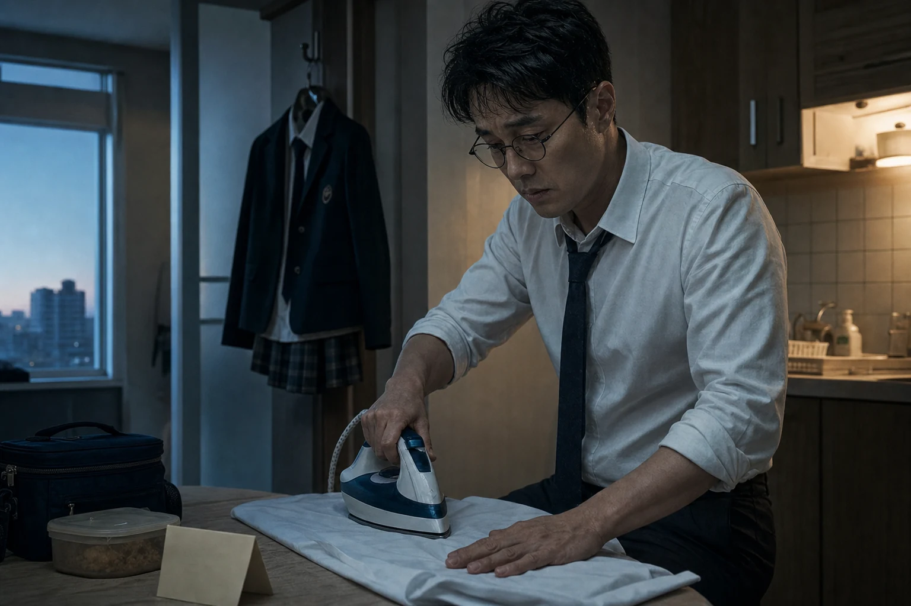
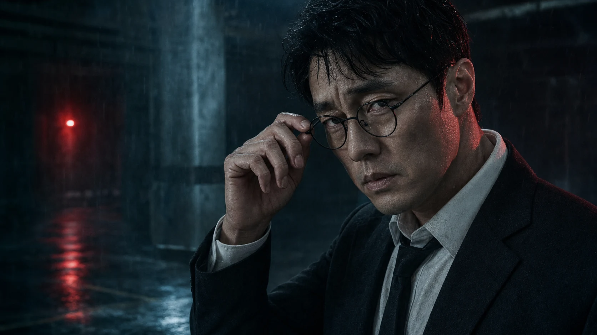
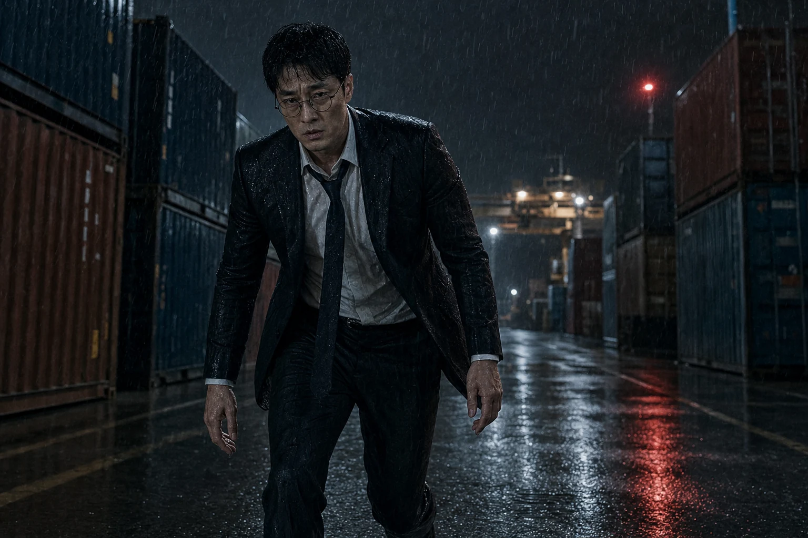
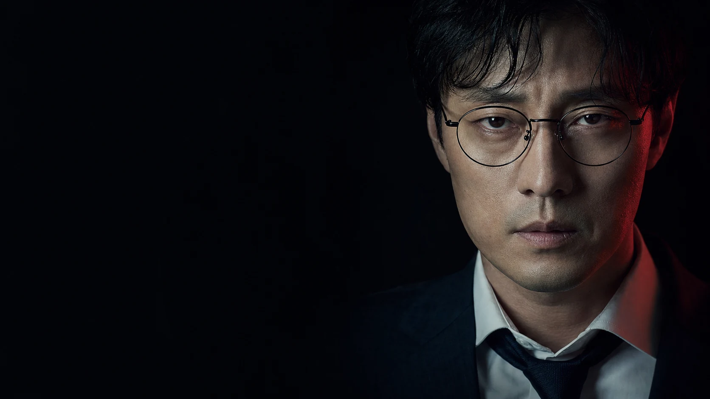

00
BEFORE THE CALL
나는 평범한 사람이었다
낡은 넥타이와 다려 놓은 교복. 지켜야 할 것이 있었기에 그는 이름을 묻고 평범함 속에 남아 있었다.

ORIGINAL THEME · NO. 66
아버지의 처절한 외침. 그리고 이어지는 무자비한 선택.
평범한 아버지의 절규가 66호의 냉혹한 전진으로 바뀌는 순간, 사랑은 가장 무서운 선택의 이유가 된다.
만약 내 딸아이한테 무슨 일이라도 생겼다면...
여기 있는 너희들,
오늘 전부 다 죽는다.

BEFORE THE CALL
낡은 넥타이와 다려 놓은 교복. 지켜야 할 것이 있었기에 그는 이름을 묻고 평범함 속에 남아 있었다.
SEAL RELEASED
문이 닫히고 전화가 끊긴 순간, 접어 둔 손이 먼저 기억했다. 마지막 경고는 끝났고 돌아갈 길도 사라졌다.

NO WAY BACK
법도, 벽도, 숫자도 의미가 없다. 그를 움직이는 것은 복수가 아니라 단 하나의 약속, 아이를 무사히 집으로 데려오는 일이다.
지킬 것이 하나뿐이다.

FULL LYRICS
만약 내 딸아이한테 무슨 일이라도 생겼다면...
여기 있는 너희들,
오늘 전부 다 죽는다.
VERSE 01
낡은 넥타이 매듭 속에죽은 이름 하나 묻었다네가 웃고 있던 동안나는 평범한 사람이었다 문이 닫히고 전화가 끊겨세상이 숨을 멈춘 순간접어 둔 손이 기억했다돌아갈 길은 이제 없다
PRE-CHORUS
한 번만 대답해내 아이는 어디 있나침묵이 길어질수록너희 밤은 짧아진다
CHORUS
돌려놔!내 딸을 돌려놔!봉인한 이름이 깨어난다 비켜서!마지막 경고다!아버지는 끝까지 간다오늘 끝까지 간다
VERSE 02
책상 위에 쌓인 먼지체면처럼 털어 버린다법도 벽도 너희 숫자도내 앞에서는 의미 없다 발자국마다 문이 잠기고숨을 곳마다 불이 꺼져내가 끝까지 가는 이유지킬 것이 하나뿐이다
PRE-CHORUS
한 번만 더 묻는다내 아이는 어디 있나거짓말이 끝나는 곳내가 먼저 도착한다
CHORUS
돌려놔!내 딸을 돌려놔!봉인한 이름이 깨어난다 비켜서!마지막 경고다!아버지는 끝까지 간다오늘 끝까지 간다
BREAKDOWN
내가 원한 건 단 하나무사히 집에 오는 것그 작은 소원 짓밟은 대가이제 너희가 감당해
BUILD
문을 닫아불을 꺼숨을 죽여이미 늦었어
FINAL CHORUS
돌려놔!내 딸을 돌려놔!평범한 아빠는 여기 없다 비켜서!마지막 경고다!아버지는 끝까지 간다오늘 전부 끝난다 끝까지 간다!끝까지 간다!
THE LAST WORD
드라마 김부장에서 영감을 받은 비공식 팬 테마 페이지입니다.